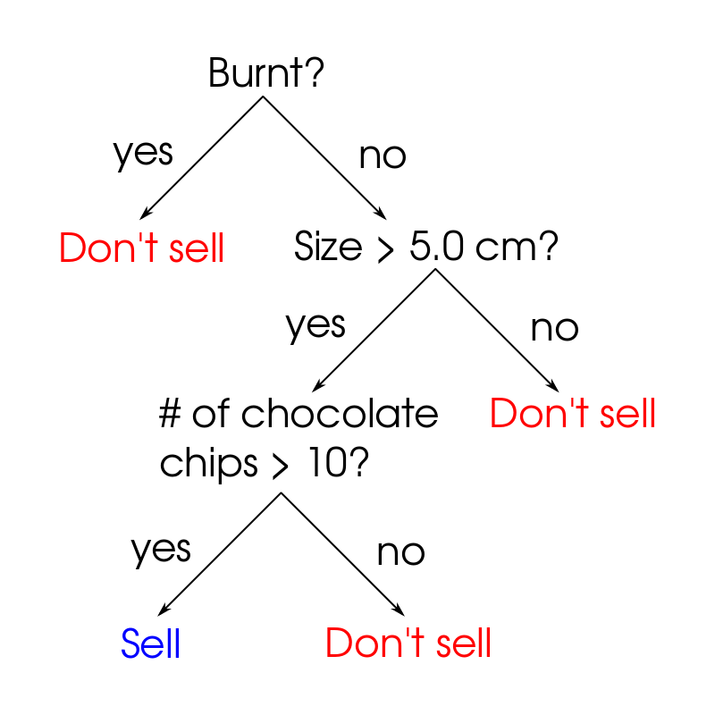

S is for Supervised Learning
Supervised learning is one of the major categories of machine learning, and it helps us predict something about a given piece of data. Many of the concepts about supervised learning have come up in previous posts, but I’m hoping that this will provide a clearer picture of how they all fit together.
Supervised learning means that you have a labeled training set with some set of features and the given output. One category of supervised learning is regression which happens when you have continuous output data. For example, given features like the square footage of a house, predict the selling price. Classification is the other major category of supervised learning which occurs when you have discrete output (i.e a finite number of categories). For example, you are trying to predict if an email is spam or not. There are only two possible outcomes in this case (spam or not spam). In regression there are an infinite number of possibilities (i.e. the house could sell for \(</span>500 000, <span>\)500 001, $500 002 etc).
How does supervised learning work?
To train any supervised learning model you need to have four things:
- Labelled data
- Features
- An objective (or cost) function
- A weight for each feature
Labelled data
As we’ve discussed before, getting high quality labelled data is hard. It’s often extremely time intensive (and also very boring). Depending on the problem it can also require a substantial amount of expertise. For example, anyone can label images as having a dog or a cat but it requires medical professionals to label MRI scans for a particular disease.
Features
This is the processed data that gets put into your model. [Processing your data]../2020-10-10-m-is-for-munging-data/index.qmd and extracting relevant features is typically the bulk of the work involved in training a ML model. In images the raw pixels could be used as features (this is common in deep learning). Natural language processing techniques are common for extracting features from text data. Getting useful features from tabular (i.e. in a table or CSV) data usually involves some level of expertise about the problem itself. In many cases you can get much better performance from a model by improving the features, as compared to using more sophisticated models.
Objective functions
An objective function (also called a cost function or loss function) tells us how well our predictions match the labeled data. It should give us more information than if the prediction was correct/incorrect. If the prediction was wrong, it should also tell us how wrong the prediction was. An example of an objective function for regression problems is Mean Absolute Error (MAE). This is just the difference between the actual value and predicted value. When trying to predict house prices being off by \(</span>300 000 is worse than being off by <span>\)1000. For classification problems, one common objective function is cross-entropy loss. It takes into account if the prediction was correct as well as how confident the model was about the prediction. If you are confident about a correct prediction you will be rewarded, but if you are confident about an incorrect prediction you’ll be penalized heavily. However, if you are not confident about your prediction the reward/penalty will be much lower. There are more examples of objective functions in [D is for Deep Learning]../2020-04-08-d-is-for-deep-learning/index.qmd and F is for F1 Score.
Feature weighting
Let’s imagine we have an extremely simple model. We are going to try to predict the price of a house given two features: location (the distance to a major city), and if the house has a dishwasher or not. As you might expect, some features (e.g. location) are more important than others (e.g dishwasher). When we start training a model, the input data, features and objective function stay the same. The only thing that changes is the weighting of each feature. Typically these weights are chosen randomly before training. In our house example on the first iteration we might have
\[ \text{Prediction} = (0.33)\cdot(\text{Location}) + (0.67)\cdot(\text{Has dishwasher}) \]
Here the dishwasher feature is twice as important as the location. This would probably lead to a bad model. After a few training iterations we might have
\[ \text{Prediction} = (0.99)\cdot(\text{Location}) + (0.01)\cdot(\text{Has dishwasher}) \]
This makes more intuitive sense. Obviously the location matters a lot more but all other things being equal, a house with a dishwasher would sell for a bit more.
Training a model
Training a model refers to finding the feature weights which minimize/maximize the objective function. For some objective functions we want to find the minimum value, while for others we want to find the maximum value. There are different ways of finding these min/max values (called optimization methods) but gradient descent is an extremely common one.
When we train a model we want to ensure our model does not overfit/underfit the data. We can do this by splitting our dataset into a training and test set. We only update the model weights based on data in the training set. The test set is used to evaluate the model on data it hasn’t seen. For more details on preventing over/underfitting see K is for K-fold Cross-Validation.
There are multiple factors that go into choosing an appropriate model for your problem. These include things like performance, training speed, interpretability, and data types. That being said three of the most common model types are:
- Logistic regression
- Random forests
- Deep learning models
Building a cookie classifier
Logistic regression
Let’s imagine we have a training set where cookies are deemed acceptable or unacceptable. Here we have two features: the cookie area and the chocolate chip density. In the plot below the blue circles indicate acceptable cookies while the red squares are rejected (though I’d probably still eat them).

Using this training set, we can train a model to predict which of some new set of cookies (the test set) will be acceptable. One way that we could use to do this is called logistic regression which is a fairly popular algorithm. In logistic regression we are trying to learn the decision boundary which is shown above by the dotted black line. Points inside this circle are classified as acceptable while points outside are rejected. This decision boundary isn’t always a circle (in fact it usually isn’t). One nice feature of logistic regression is that you can have an arbitrarily shaped decision boundary (careful not to overfit!). As you can see, the classification isn't perfect and there are red squares misclassified as acceptable and vice versa. We can measure how well our classifier is doing using its F1 score.
Classification algorithms typically have some level of confidence about their prediction (via a probability). So it may have classified the blue circle on the edge of the decision boundary as unacceptable but if you looked at the confidence it would probably be pretty low. The same thing is true for the misclassified red squares. This is particularly useful if you are doing something like classifying executable code as malicious or benign. You can order your predictions in terms of confidence to have the most malicious at the top and then get less confident as you scroll downwards.
Random forests
There are two key concepts involved in a random forest model that are more broadly used in data science/machine learning as a whole. The first is the idea of a decision tree. A decision tree essentially looks like a flow chart. As you go down the tree, the data is categorized further and further. The figure below shows an example decision tree of our cookie classification example. As you can see it is much closer to what a human would think if they were trying to determine whether the cookie should be sold or not.

The second key idea is the notion of ensembles. In an ensemble you take a bunch of weak learners (like a decision tree) and aggregate them together to create a strong learner. People also do ensembles with different machine learning algorithms (e.g. an ensemble of random forest, logistic regression, and support vector machine models) where each model has a vote in the final classification. There are different ways to create an ensemble (e.g. votes can be weighted) and they are an extremely useful tool.
The forest portion of random forest comes from the fact that it is an ensemble of decision trees. But where does the random come from? The random forest algorithm works as follows:
- Sample data your training set (with replacement) to create random subsets of data
- For each subset choose a random set of predictor features (e.g. cookie size)
- For each node in the tree, find the predictor variable that provides the best split of the data. For example you might find that cookies under 5cm are not worth selling. At the next node choose another set of features and repeat the process.
As a typical example you might have 100 decision trees (all trained on random sets of features) in your random forest. Each tree makes a prediction if the cookie is worth selling/not. The final prediction is made based on the class that gets the most votes.
Summary
Supervised learning is an extremely powerful tool that can help us automate many tasks and scale to levels where humans cannot. A common use case for supervised learning models is to automate the simple decisions and have humans look at the more complex cases. As always it’s important to have interpretable models as well as an appeals process for wrong predictions. While model choices are important, data preprocessing and feature selection can have a large effect on model performance. It’s usually better to start with a simpler model like logistic regression or random forests before moving into more sophisticated models like deep learning.